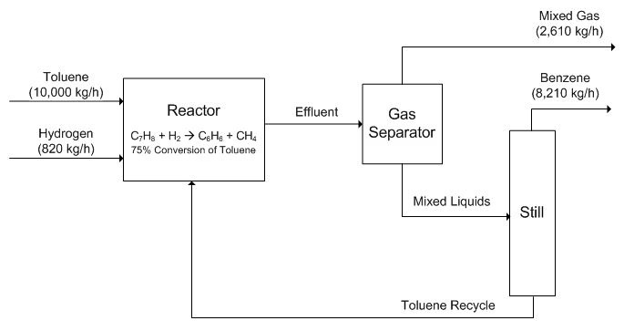
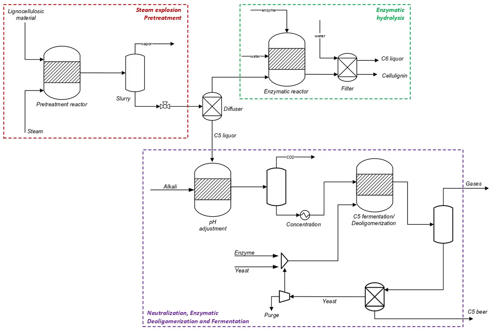
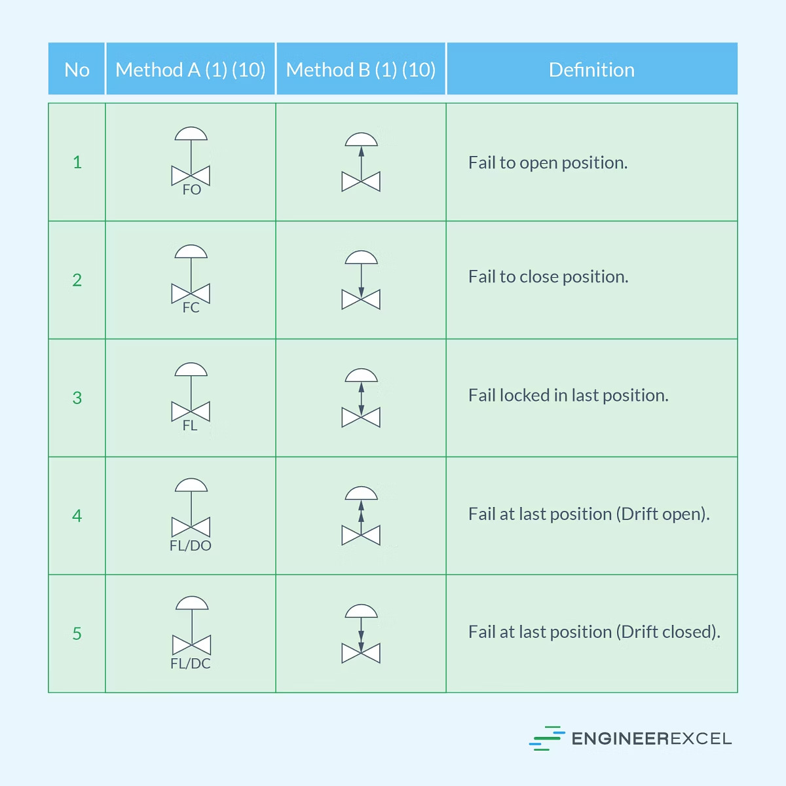
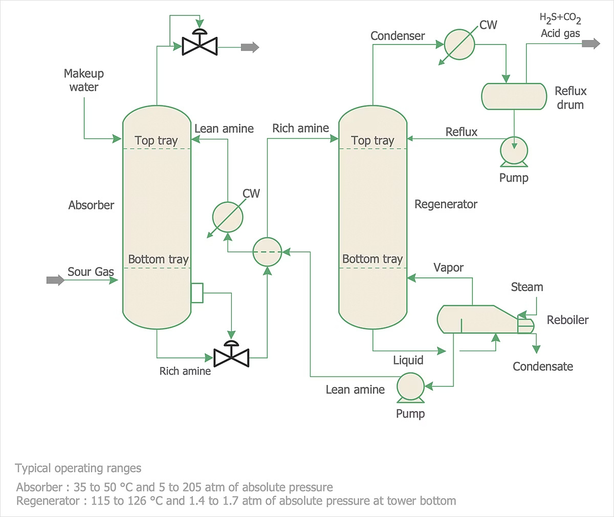
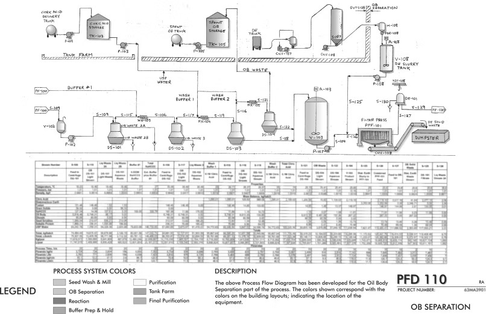
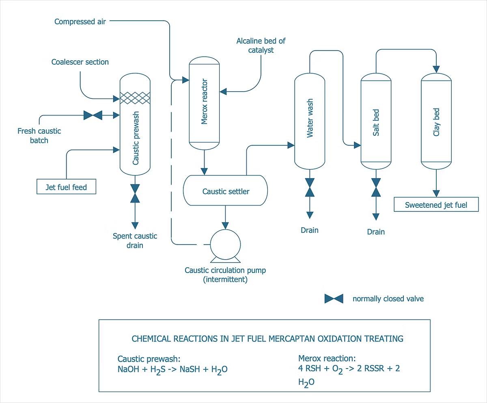

IQYA-2031 · 2026-10
Diagramas de ingeniería
El lenguaje visual universal de la ingeniería química
PBD
PFD
P&ID
Simbología ISA
IQYA-2031 · 2026-10
El lenguaje visual universal de la ingeniería química
Agenda
La vista macroscópica del proceso.
Detalle técnico para cálculos y balances.
Especificaciones para construcción y operación segura.
Talleres y proyecto semestral.
Contexto
Los diagramas de ingeniería son el lenguaje visual universal de nuestra profesión, permitiendo una comunicación clara entre ingenieros de distintas culturas. Esta precisión es vital, especialmente en la industria química, donde un error puede tener consecuencias catastróficas y la claridad es cuestión de vida o muerte.
Niveles de diagramación
Vista simplificada, 6-10 bloques, ideal para presentaciones ejecutivas.
Equipos principales con información técnica, base para cálculos.
Detalle completo para construcción, incluye instrumentación.
PBD
El PBD comunica la esencia de su proceso en 30 segundos. Responde: ¿qué hacemos? No al ¿cómo lo hacemos?
PBD · Ejemplo

PBD · Elementos
Proporción 1.5:1, nombres descriptivos centrados ("FERMENTACIÓN").
Flechas claras, grosor consistente (1.5 pt).
Materias primas a la izquierda.
Productos y subproductos a la derecha.
Flujos principales en kg/h sobre las líneas.
PBD · Construcción
PBD · Errores
Incluir cada bomba y válvula.
Aspecto amateur.
Líneas caóticas.
La vinaza es 90% del flujo másico.
"FERMENTADOR" en vez de "FERMENTACIÓN".
Dirección debe ser inequívoca.
PFD
El PFD añade el detalle técnico necesario para cálculos de diseño. Es el documento de trabajo del ingeniero de proceso.
PFD · Ejemplo
Mientras el PBD dice "FERMENTACIÓN", el PFD muestra:

PFD · Simbología

PFD · Información
Código único (V-101), descripción, condiciones T y P.
Número único, flujo másico, composición, T, P, estado físico.
Listado completo de propiedades, flujo por componente, entalpía.
PFD · Construcción
PFD · Codificación
V=tanque, P=bomba, E=intercambiador, C=columna, K=compresor, R=reactor.
100=preparación, 200=fermentación, 300=separación, 400=destilación, 500=servicios.
Números secuenciales dentro del área (P-201 = primera bomba en fermentación).
Sufijos A/B/C para equipos idénticos (P-201A/B/C).
PFD · Líneas

PFD · Líneas
2"-FG-3001-CS
2 pulgadas · FG: Fluido General · 3001: número de línea · CS: Carbon Steel
PFD · Balance
El PFD debe cerrar al menos a ±1%, idealmente a ±0.1%. Un balance que no cierra indica error.
PFD · Servicios
3 kg/kg alcohol, líneas punteadas rojas, 3 barg.
50 m³/m³ mosto, líneas punteadas azules, 2 barg.
100 kW para agitación y bombeo.
Para instrumentación y control, 6 barg.
PFD · Ejemplo real

Ejemplo de PFD profesional con leyenda de colores y codificación completa.
PFD · Software
Bibliotecas ISA completas, drag-and-drop intuitivo.
Precisión dimensional, útil para evolución a P&ID.
Alternativa gratuita aceptable.
PFD · Tabla de corrientes
Complementa el PFD con información cuantitativa.
PFD · Ejemplo PFD completo

Errores
Copiar PFDs de internet. "Los reconozco inmediatamente."
Error >5%.
ISA y DIN combinados.
CO₂ de fermentación = 48% de masa convertida.
Bombas del tamaño de tanques.
PFD dice 100 kg/h, tabla dice 150.
JPG pixelado. Usen PDF vectorial.
¿Cómo mueven la materia?
Mejores prácticas
Documento vivo
Su PFD es el single source of truth. No es tarea para entregar y olvidar.
Molinos: potencias y tamaños.
Bombas: cabezas y NPSHr.
Intercambiadores: áreas y configuraciones.
Destilación: número de platos y reflujo.
ASPEN: validar contra cálculos manuales.
Resumen
El PFD es el hilo conductor que une todos los elementos en un diseño coherente. Inviertan tiempo ahora en hacerlo bien; pagarán dividendos todo el semestre.
IQYA-2031
Proy. de Op. Unitarias · Prof. Luis H. Reyes